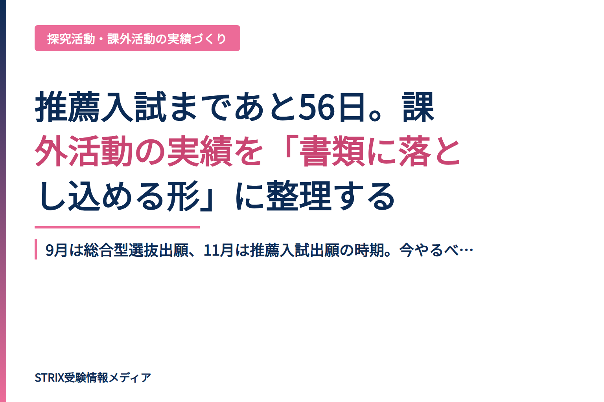

東北学院大学が2027年4月に新設する「未来探究科学部デジタル構想学科」(定員110名)。総合型選抜はAI単元・面接重視型の2方式で実施予定。背景・カリキュラムと志望理由書対策のポイントを解説します。
2026-09-13
東京工芸大学・芸術学部の総合型選抜Ⅰ期が9月9日に出願受付開始。学力試験ではなく、ポートフォリオ・企画提案・論述の3種類の課題と面接で「感性・想像力・意欲」を評価する、実技系志望者向けの入試方式を詳解。
2026-09-07
9月は総合型選抜出願、11月は推薦入試出願の時期。今やるべきは、バラバラな活動を「採点官が評価できる形」に編集すること。その具体的な手順を解説します。
2026-09-06
9月の共通テスト出願を前に、入学後のミスマッチを防ぐ学部選びの落とし穴を解説。偏差値だけ、イメージだけの選択をしていませんか？後悔しない3つの確認ポイント。
2026-09-05
推薦入試の合格経験者300名が後悔した対策の実態。面接練習不足・志望理由の準備不十分・自分の話のまとめ方…。9月の出願から本番までの限られた時間で何をすべきか、具体的な対策を紹介します。
2026-09-04
2026年から共通テスト出願が郵送から個人WEB出願に変更。9月16日の出願開始まであと2週間。性別ミスや検定料間違いなど、親のうっかりミスで受験資格を失う事態も。注意点と今からの準備を解説。
2026-09-03
総合型選抜の出願が9月1日より本格化。出願直前のこの瞬間、形式面・論理面・説得力面で落ちるミスが多発。高3が今すぐやるべき最終チェックリストとSTRIXの不安軽減指導を公開。
2026-09-02
総合型選抜は9月1日から出願開始。志望理由書・面接対策が決め手になる今、本当に実力がある塾の選び方と、出願直前からでも対策できる要素を詳しく解説します。
2026-09-01
総合型選抜は9月、推薦選抜は11月からスタート。2つの入試が同時進行する秋に、保護者が準備すべき出願管理・心理的サポート・併願戦略を解説します。
2026-08-312027年度総合型選抜は9月1日から出願開始。制度改革で面接が必須化され、志望理由書がより重要に。「大学の特色の根拠化」「経験の言語化」「親との連携」の3つの観点から、出願直前に確認すべきポイントを解説します。
2026-08-30
推薦入試対策塾を徹底比較。STRIXは志望理由書・小論文・面接までマンツーマンで一貫サポート。AOI・洋々・Loohcs志塾など主要5塾との料金・サービスの違いも解説。9月出願直前の塾選びの決定版。
2026-08-29
学校推薦型選抜の合否を左右する志望理由書。抽象的な志望動機、大学への理解不足、一貫性の欠如が落選の主因。本記事は11月出願を控えた今、合格する書き方の3つのポイントを具体例とともに解説します。
2026-08-28
同じ推薦系入試でも総合型選抜（9月出願）と学校推薦型選抜（11月出願）では出願時期が2ヶ月以上違う。今から準備すべき内容が180度変わります。
2026-08-26
東京造形大学の総合型選抜は、作品・活動資料（ポートフォリオ）×プレゼン×面接という実技系大学ならではの選考方式。9月1日出願開始を控え、選考フローと準備のポイントを解説します。
2026-08-25
9月1日から総合型選抜の出願が開始。志望理由書の文字数チェック、出願システムの準備、写真アップロード…合格者が本番直前に確認している5つの重要項目を解説。
2026-08-24
オープンキャンパスで見るべき3つのポイント（実際の授業難易度・親との連携体制・就職支援の具体性）と、パンフレットから読み取るべき「カリキュラムポリシー」を解説。学部選択で失敗しないための具体的なチェックリスト。
2026-08-23
2027年度大学入試から面接が原則必須化。2028年度入試から完全適用される大きな変更で、現在の高校2年生の進路戦略が大きく変わります。対策の鍵を解説。
2026-08-22
総合型選抜の出願は9月開始。8月が最後の準備期間だからこそ、志望理由書の一人書き・曖昧な志望理由といった構造的なミスで落ちる受験生は多い。失敗パターンと対策を解説。
2026-08-19
2026年度から推薦入試に学力試験が導入。従来の書類・面接対策だけでは合格できない時代に。専門塾・個別指導・集団塾の選び方を解説します。
2026-08-18
2026年度大学入試で総合型選抜が過去最多。AIの乱用を防ぐため上位校では「思考力を測る」出題へシフト。自己推薦書の失敗パターンと、説得力のある「骨組みづくり」の手順を解説します。
2026-08-17
2027年度推薦入試は9月スタート。総合型選抜・学校推薦型選抜のスケジュール、かかる費用、親がサポートすべきポイントを詳しく解説。
2026-08-16
2026年度総合型選抜で探究活動が鍵になる理由を解説。理系・文系の探究テーマの選び方から、入試で高く評価される「思考プロセスの言語化」まで、志望理由書・面接で活かす実践的アプローチを紹介します。
2026-08-15
総合型選抜の出願が9月からスタート。志望校・志望理由が曖昧なまま夏を終えた高3生が秋に陥る「後悔パターン」と、今からできる大学研究の4ステップを解説。高2生は必読。
2026-08-14
2026年度入試で学校推薦型選抜の53%が学科試験を導入。自己推薦書の差別化がいよいよ必須に。困難の掘り下げから説得力を引き出す実践的な書き方を解説。
2026-08-13
2026年度の総合型選抜は実施大学が過去最多。面接で「困難を乗り越えた過程」を説得的に伝えられないと、多くの受験生は落とされます。STRIXの指導ノウハウから、自己PRを武器にする3つの手法を紹介。
2026-08-12
総合型選抜の合格を決める自己推薦書。合格者と落選者の決定的な違いは何か？経験を「ただ報告する」から「困難を乗り越えるプロセスを伝える」へ切り替えるコツをSTRIXの指導事例から解説。
2026-08-11
推薦入試の塾選びで失敗する受験生が多い。合格率が60～80%の現実。自己推薦書・志望理由書の指導が弱い塾では対策不足に。本当に必要な「困難の掘り下げ」指導とは
2026-08-10
高3の8月は推薦入試準備の分岐点。校内選考結果の確認から出願書類作成、面接練習まで、この時期にやっておくべき準備を具体的に解説します。
2026-08-08
推薦入試で評価される「実績」の作り方を解説。テーマ選定から成果のまとめ方まで、夏休み中に実践できる5つのステップを具体的に紹介します。主体性・継続性・成長性が評価の鍵。
2026-08-08
推薦入試の志望理由書に何を書くべきか。合格者の事例と大学入試担当者が評価するポイントをまとめました。原体験・深掘り・将来像の3ステップで、矛盾のない志望理由を構成するコツ。
2026-08-08
志望理由書の高評価パターンを、構成テンプレートと実例3つで解説。面接官が見るポイント、失敗例と改善方法まで、受験生・保護者向けの実践的ガイド。
2026-08-08
推薦入試の志望理由書の書き方で最も重要な3つの構成ポイントを解説。審査官に評価される論理的で説得力のある志望理由書の作り方を、具体例を交えて紹介します。
2026-08-08